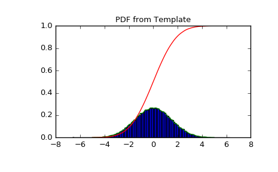

scipy.stats.rv_histogram¶
-
class
scipy.stats.rv_histogram(histogram, *args, **kwargs)[source]¶ Generates a distribution given by a histogram. This is useful to generate a template distribution from a binned datasample.
As a subclass of the
rv_continuousclass,rv_histograminherits from it a collection of generic methods (seerv_continuousfor the full list), and implements them based on the properties of the provided binned datasample.Parameters: histogram : tuple of array_like
Tuple containing two array_like objects The first containing the content of n bins The second containing the (n+1) bin boundaries In particular the return value np.histogram is accepted
Notes
There are no additional shape parameters except for the loc and scale. The pdf is defined as a stepwise function from the provided histogram The cdf is a linear interpolation of the pdf.
New in version 0.19.0.
Examples
Create a scipy.stats distribution from a numpy histogram
>>> import scipy.stats >>> import numpy as np >>> data = scipy.stats.norm.rvs(size=100000, loc=0, scale=1.5, random_state=123) >>> hist = np.histogram(data, bins=100) >>> hist_dist = scipy.stats.rv_histogram(hist)
Behaves like an ordinary scipy rv_continuous distribution
>>> hist_dist.pdf(1.0) 0.20538577847618705 >>> hist_dist.cdf(2.0) 0.90818568543056499
PDF is zero above (below) the highest (lowest) bin of the histogram, defined by the max (min) of the original dataset
>>> hist_dist.pdf(np.max(data)) 0.0 >>> hist_dist.cdf(np.max(data)) 1.0 >>> hist_dist.pdf(np.min(data)) 7.7591907244498314e-05 >>> hist_dist.cdf(np.min(data)) 0.0
PDF and CDF follow the histogram
>>> import matplotlib.pyplot as plt >>> X = np.linspace(-5.0, 5.0, 100) >>> plt.title("PDF from Template") >>> plt.hist(data, normed=True, bins=100) >>> plt.plot(X, hist_dist.pdf(X), label='PDF') >>> plt.plot(X, hist_dist.cdf(X), label='CDF') >>> plt.show()
Attributes
random_stateGet or set the RandomState object for generating random variates. Methods
__call__(*args, **kwds)Freeze the distribution for the given arguments. cdf(x, *args, **kwds)Cumulative distribution function of the given RV. entropy(*args, **kwds)Differential entropy of the RV. expect([func, args, loc, scale, lb, ub, ...])Calculate expected value of a function with respect to the distribution. fit(data, *args, **kwds)Return MLEs for shape (if applicable), location, and scale parameters from data. fit_loc_scale(data, *args)Estimate loc and scale parameters from data using 1st and 2nd moments. freeze(*args, **kwds)Freeze the distribution for the given arguments. interval(alpha, *args, **kwds)Confidence interval with equal areas around the median. isf(q, *args, **kwds)Inverse survival function (inverse of sf) at q of the given RV.logcdf(x, *args, **kwds)Log of the cumulative distribution function at x of the given RV. logpdf(x, *args, **kwds)Log of the probability density function at x of the given RV. logsf(x, *args, **kwds)Log of the survival function of the given RV. mean(*args, **kwds)Mean of the distribution. median(*args, **kwds)Median of the distribution. moment(n, *args, **kwds)n-th order non-central moment of distribution. nnlf(theta, x)Return negative loglikelihood function. pdf(x, *args, **kwds)Probability density function at x of the given RV. ppf(q, *args, **kwds)Percent point function (inverse of cdf) at q of the given RV.rvs(*args, **kwds)Random variates of given type. sf(x, *args, **kwds)Survival function (1 - cdf) at x of the given RV.stats(*args, **kwds)Some statistics of the given RV. std(*args, **kwds)Standard deviation of the distribution. var(*args, **kwds)Variance of the distribution.